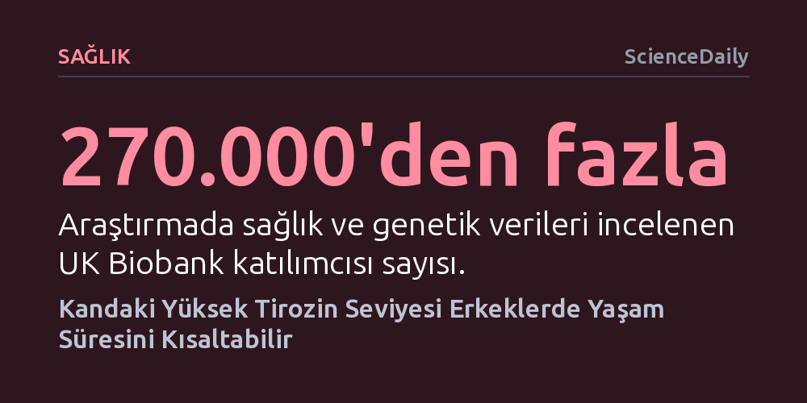

SAGLIK · ScienceDaily · 2026-09-08
270 binden fazla kişinin verilerini inceleyen kapsamlı bir araştırma, kandaki yüksek tirozin seviyelerinin erkeklerde yaşam süresini yaklaşık bir yıl kısaltabileceğini ortaya koydu. Kadınlarda ise bu amino asit ile yaşam beklentisi arasında anlamlı bir bağlantı saptanmadı.
Zihinsel odaklanmayı artırmak amacıyla yaygın kullanılan takviyelerin ve yüksek proteinli beslenmenin, erkek biyolojisinde ömrü kısaltabilecek öngörülmeyen uzun vadeli riskler barındırabileceğini gösteriyor.

Protein açısından zengin gıdalarda doğal olarak bulunan ve zihinsel performansı ile odaklanmayı artırma iddiasıyla takviye olarak sıkça tüketilen tirozin amino asidi, uzun ömür araştırmalarında ezber bozan bir bulguyla gündeme geldi. Hong Kong Üniversitesi ve Georgia Üniversitesi araştırmacılarının yürüttüğü çalışma, kandaki tirozin yoğunluğunun erkeklerin yaşam süresi üzerinde olumsuz bir etkiye sahip olabileceğine işaret ediyor.
Araştırma sonuçlarına göre, kanda yüksek düzeyde seyreden tirozin miktarı erkeklerin yaşam beklentisinde yaklaşık bir yıllık bir kayba yol açabiliyor. Çalışmanın en dikkat çekici yönlerinden biri ise bu etkinin cinsiyete özgü olması; kadın katılımcılarda tirozin düzeyleri ile ömür uzunluğu arasında hiçbir anlamlı bağ tespit edilmedi. Cinsiyetler arasındaki bu belirgin fark, yaşlanma biyolojisinin kadın ve erkek bedeninde farklı yollar üzerinden ilerlediğini düşündürüyor.
Bilim insanları bu bulguya ulaşmak için Birleşik Krallık'ta yaşayan yüz binlerce kişinin sağlık ve genetik verilerini barındıran UK Biobank veri tabanını mercek altına aldı. Çalışma kapsamında 270 binden fazla katılımcının kandaki fenilalanin ve tirozin seviyeleri ile ölüm verileri karşılaştırıldı. Başlangıçta her iki amino asit de yüksek ölüm riskiyle ilişkili görünse de detaylı modellemeler yapıldığında fenilalanin elendi ve bağımsız bir faktör olarak öne çıkan tek molekül tirozin oldu.
Bulguların bir korelasyondan ibaret kalmaması için araştırmacılar 'Mendelci rastgeleleştirme' yönteminden yararlandı. İnsanların doğuştan gelen genetik farklılıklarını kullanan bu teknik, yaşam tarzı ve çevresel faktörlerin yarattığı yanıltıcı etkileri eleyerek neden-sonuç ilişkisini test etmeyi sağlar. Genetik analizler, araştırmacıların belirttiği üzere "Tirozin kontrol edildiğinde fenilalanin, ne erkeklerde ne de kadınlarda yaşam süresiyle herhangi bir ilişki göstermedi" sonucunu teyit ederek tirozinin erkeklerde yaşamı kısaltıcı bağımsız bir nedensel rolü olabileceğini güçlendirdi.
Tirozinin erkek metabolizmasında neden bu tür bir kırılganlık yarattığı kesin olarak bilinmese de araştırmacılar iki güçlü hipotez üzerinde duruyor. İlk şüpheli, hücrelerin kan şekerini düzenleyen insülin hormonuna duyarsızlaşmasıyla ortaya çıkan insülin direnci. Yaşlandıkça yaygınlaşan birçok kronik rahatsızlığın zeminini hazırlayan insülin direncinin, yüksek tirozin konsantrasyonuyla tetiklenebileceği öngörülüyor.
İkinci açıklama ise tirozinin nörotransmitter ve stres mekanizmalarındaki rolüne odaklanıyor. Tirozin, beyinde motivasyon ve zihinsel işlevleri yöneten dopaminin yanı sıra stres tepkilerini yöneten hormonların üretiminde temel yapı taşıdır. Hormonal sinyal yollarının erkeklerde ve kadınlarda farklı işlemesi, tirozinin erkek organizmasında daha yıpratıcı bir metabolik yüke dönüşmesine yol açıyor olabilir. Ayrıca erkeklerin genel olarak kadınlardan daha yüksek tirozin seviyelerine sahip olması da bu etkinin erkeklerde yoğunlaşmasını açıklayabilecek etkenler arasında sayılıyor.
Bulgular zihinsel berraklık amacıyla yaygın satılan tirozin takviyeleri hakkında soru işaretleri yaratsa da çalışmanın sınırlarını doğru kavramak büyük önem taşıyor. Araştırmacılar doğrudan piyasada satılan takviyeleri veya bunları kullanan kişileri klinik olarak test etmedi. Dolayısıyla mevcut sonuçlar, tirozin takviyesi almanın doğrudan insan ömrünü kısalttığını kesin bir biçimde kanıtlamıyor.
Çalışma, kanda olağan dışı yüksek tirozin seviyesine sahip kişilerin diyet yoluyla protein tüketimini dengeleyerek bu seviyeleri düşürebileceğini öne sürse de, tirozini diyetle bilinçli olarak azaltmanın ömrü uzatıp uzatmayacağı henüz bilinmiyor. Uzmanlar, mekanizmalar tam olarak anlaşılmadan ve yeni klinik deneylerle doğrulanmadan beslenme alışkanlıklarında radikal değişiklikler yapılmaması gerektiği konusunda uyarıda bulunuyor.